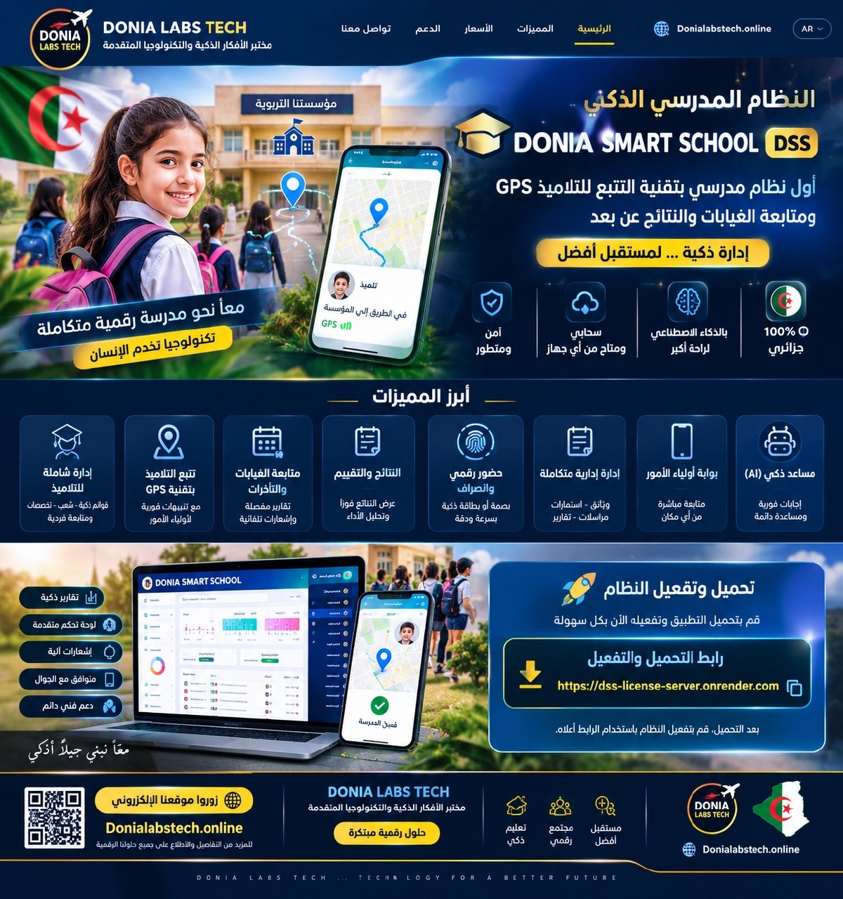

ملفات ضائعة، غياب يُكتشف متأخراً، أولياء لا يعلمون أين أبناؤهم، وموظف واحد يمكنه أن يطّلع على ما لا يخصّه — كل هذا يتوقف مع DONIA SMART SCHOOL: نظام واحد يمنح كل موظف بوابته الخاصة، ويمنح مديرك رؤية كاملة ومتحكَّم فيها للمؤسسة، لحظة بلحظة.

أيام كاملة تُصرَف لإعداد وثائق رسمية يدوياً في كل مطلع سنة أو نهاية فصل، بدل التركيز على التلاميذ.
الأولياء يعلمون بغياب ابنهم بعد أيام، وأحياناً بعد فوات المهلة القانونية للتبليغ — مسؤولية قد تقع على المؤسسة.
أي موظف بحساب واحد يرى كل شيء، وبلا سجل يوثّق من عدّل ماذا — خطر حقيقي على بيانات التلاميذ الحساسة.
لا وسيلة سهلة تُبقي الأولياء على اطلاع بنتائج ابنهم أو غيابه أو حتى مكانه داخل المؤسسة، فتضعف الثقة والتواصل.
إعداد استعمال الزمن يدوياً يعني تعارضات تُكتشف بعد التوزيع، وإعادة عمل مضنية كل فصل دراسي.
برامج تسيير مجانية أو منسوخة بلا ترخيص حقيقي، تتوقف فجأة أو تُفقد بياناتها بلا أي دعم فني.
قدرات حقيقية، مبنية ومُختبرة على مدرسة تعمل بها فعلياً — لا وعود، بل نظام يُستعمل يومياً.
كل موظف له بوابة صلاحيات خاصة به (مدير، ناظر، مستشار، أستاذ، إداري...)، والمدير وحده يمنح أو يسحب كل صلاحية — مع سجل تدقيق كامل يوثّق من فعل ماذا ومتى.
بريد إلكتروني وواتساب يصلان فور تسجيل الغياب — لا مهلة قانونية تُفوَّت، ولا ولي أمر يُفاجَأ بعد أسبوع.
مسح لحظي عند الدخول، تصنيف تلقائي حاضر/متأخر، وربط فوري بسجل الغياب دون أي إدخال يدوي.
نقاط تفتيش ذكية (البوابة، الحافلة، القاعة...) تسجّل آخر موقع معروف للتلميذ فور مسح بطاقته، على خريطة حيّة يطّلع عليها ولي الأمر عبر بوابته الخاصة — أول نظام مدرسي جزائري بهذه التقنية.
استعمال زمن كامل رقمياً، بفحص تلقائي لتعارضات القسم والأستاذ والقاعة، وطباعة فورية لكل جدول حصص جاهزة للتعليق.
اثنتا عشرة وثيقة رسمية مطابقة للمنشور 177/93 تُصدَر دفعة واحدة — عمل كان يستغرق أياماً، يصبح ثوانٍ.
الولي يسجّل نفسه عبر رابط خاص بالمؤسسة، وبعد التفعيل الإداري يتابع النتائج والغياب والموقع، لحظياً.
وثيقة إدارية غير مبرمجة مسبقاً؟ المساعد الذكي يولّدها اعتماداً على نماذج مُتعلَّمة من وثائق المؤسسة نفسها.
ترخيص كل مؤسسة موقّع رقمياً (Ed25519) بلا إمكانية تزوير — تفعيل مرة واحدة فقط عبر الإنترنت، ثم يعمل النظام محلياً بلا حاجة لأي اتصال أو تثبيت متكرر بعدها.
كل يوم تُدار فيه مؤسستك بالطريقة القديمة هو وقت وثقة لن يعودا. حمّل النظام الآن، أو أرسل طلب ترخيص وسنتواصل معك خلال وقت قصير لإتمام التفعيل.
التحميل ونموذج طلب الترخيص متاحان معاً على نفس الرابط أعلاه.